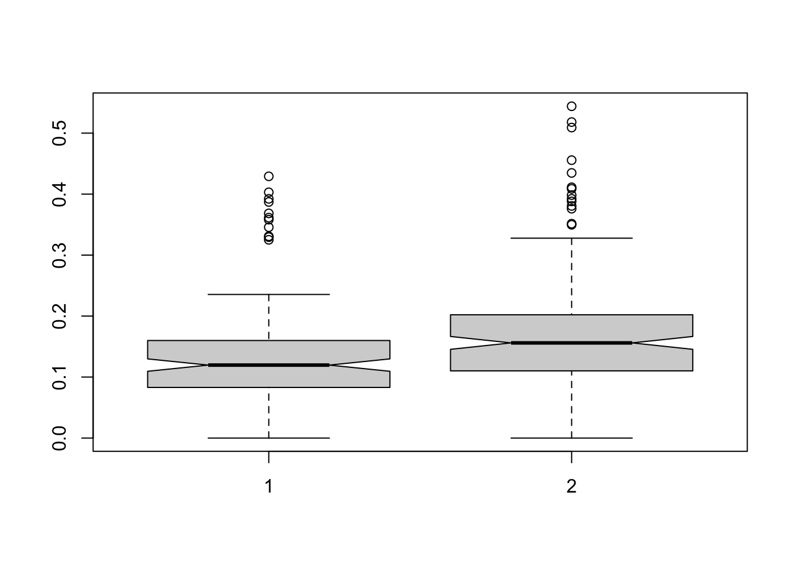
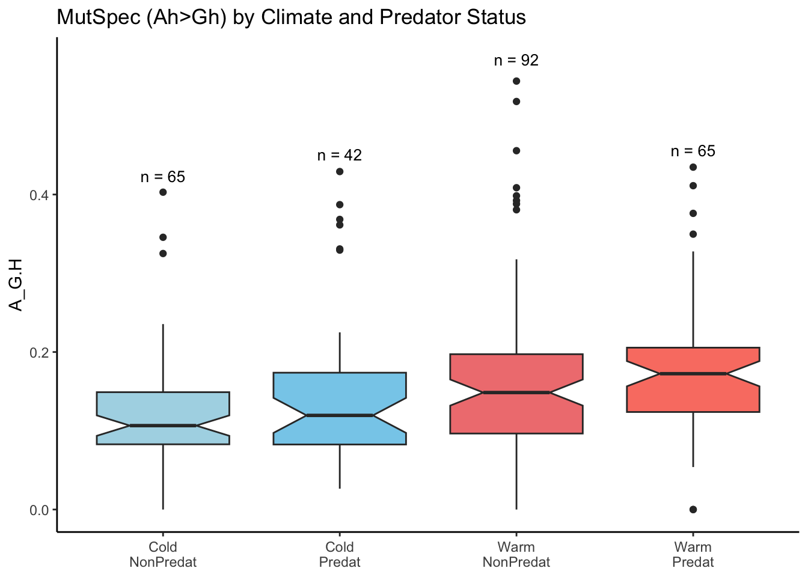

Last updated: 2025-06-02
Checks: 7 0
Knit directory:
TemperatureEffectsOnMtDNAspectra/
This reproducible R Markdown analysis was created with workflowr (version 1.7.1). The Checks tab describes the reproducibility checks that were applied when the results were created. The Past versions tab lists the development history.
Great! Since the R Markdown file has been committed to the Git repository, you know the exact version of the code that produced these results.
Great job! The global environment was empty. Objects defined in the global environment can affect the analysis in your R Markdown file in unknown ways. For reproduciblity it’s best to always run the code in an empty environment.
The command set.seed(20240719) was run prior to running
the code in the R Markdown file. Setting a seed ensures that any results
that rely on randomness, e.g. subsampling or permutations, are
reproducible.
Great job! Recording the operating system, R version, and package versions is critical for reproducibility.
Nice! There were no cached chunks for this analysis, so you can be confident that you successfully produced the results during this run.
Great job! Using relative paths to the files within your workflowr project makes it easier to run your code on other machines.
Great! You are using Git for version control. Tracking code development and connecting the code version to the results is critical for reproducibility.
The results in this page were generated with repository version 530b2a6. See the Past versions tab to see a history of the changes made to the R Markdown and HTML files.
Note that you need to be careful to ensure that all relevant files for
the analysis have been committed to Git prior to generating the results
(you can use wflow_publish or
wflow_git_commit). workflowr only checks the R Markdown
file, but you know if there are other scripts or data files that it
depends on. Below is the status of the Git repository when the results
were generated:
Ignored files:
Ignored: .DS_Store
Ignored: .Rhistory
Ignored: .Rproj.user/
Ignored: analysis/.DS_Store
Ignored: analysis/.RData
Ignored: analysis/.Rhistory
Ignored: code/.DS_Store
Ignored: data/.DS_Store
Ignored: data/AllGenesCodonUsageNoOverlap.txt
Ignored: data/ColdAndWarmFishesSpectra.txt
Ignored: data/Dataset_S1.csv
Ignored: data/ExpectedFractions.txt
Ignored: data/Extra_climate_data_2025.csv
Ignored: data/Extra_temperature_grow_data_2025.csv
Ignored: data/Extra_temperature_popQB_data_2025.csv
Ignored: data/Full_fish_ecology_table_2025.csv
Ignored: data/MIDORI2_LONGEST_NUC_GB265_Cytb_BLAST.fasta
Ignored: data/MIDORI2_LONGEST_NUC_GB265_Cytb_BLAST.fasta.fai
Ignored: data/MIDORI_WG_CYTB_FISHES.csv
Ignored: data/SimulationData.csv
Ignored: output/.DS_Store
Ignored: output/tables/
Unstaged changes:
Modified: output/figures/PolymorphicData.Actinopterygii.A_GwitnTemperatureCytB.pdf
Modified: output/figures/PolymorphicData.Actinopterygii.AverageMutSpecColdAndWarmCytB.pdf
Modified: output/figures/PolymorphicData.Actinopterygii.AverageMutSpecCytB.pdf
Note that any generated files, e.g. HTML, png, CSS, etc., are not included in this status report because it is ok for generated content to have uncommitted changes.
These are the previous versions of the repository in which changes were
made to the R Markdown
(analysis/Ia_Polymorphic_Data_Analysis_TrophLevel.KP.Rmd)
and HTML
(docs/Ia_Polymorphic_Data_Analysis_TrophLevel.KP.html)
files. If you’ve configured a remote Git repository (see
?wflow_git_remote), click on the hyperlinks in the table
below to view the files as they were in that past version.
| File | Version | Author | Date | Message |
|---|---|---|---|---|
| Rmd | ad28257 | Alya Mikhailova | 2025-06-02 | Violin plots for tempersture and A>G |
| html | ad28257 | Alya Mikhailova | 2025-06-02 | Violin plots for tempersture and A>G |
| Rmd | bdaf5f7 | Alya Mikhailova | 2025-05-26 | all analyses on CytB and PGLS for Troph |
| html | bdaf5f7 | Alya Mikhailova | 2025-05-26 | all analyses on CytB and PGLS for Troph |
read data
### CLIMATE
Mut = read_csv(here(data_dir, "MutSpecVertebrates12fish.csv"))Rows: 13380 Columns: 9
── Column specification ────────────────────────────────────────────────────────
Delimiter: ","
chr (4): Gene, Class, Species, Mut
dbl (5): Observed, TreeLeaves, MSAsize, Expected, MutSpec
ℹ Use `spec()` to retrieve the full column specification for this data.
ℹ Specify the column types or set `show_col_types = FALSE` to quiet this message.names(Mut)[1] "Gene" "Class" "Species" "Mut" "Observed"
[6] "TreeLeaves" "MSAsize" "Expected" "MutSpec" head(Mut)dim(Mut)[1] 13380 9Eco = read.csv(here(data_dir, "Full_fish_ecology_table_2025.csv"))
dim(Eco)[1] 4590 12Eco <- Eco[!is.na(Eco$Climate_zone), c(1, 11)] # Filter and select columns
MutEco = merge(Mut,Eco)
MutEco$WarmClimate <- ifelse(MutEco$Climate_zone %in% c("tropical", "subtropical"), 1, 0)
table(MutEco$Gene)
CO1 Cytb
1032 3996 MutEco = MutEco[MutEco$Gene == 'Cytb',]
MutEco = MutEco[MutEco$Mut == 'T>C',]
dim(MutEco)[1] 333 11cor.test(MutEco$MutSpec,MutEco$WarmClimate, method = 'spearman')Warning in cor.test.default(MutEco$MutSpec, MutEco$WarmClimate, method =
"spearman"): Cannot compute exact p-value with ties
Spearman's rank correlation rho
data: MutEco$MutSpec and MutEco$WarmClimate
S = 4607473, p-value = 3.417e-06
alternative hypothesis: true rho is not equal to 0
sample estimates:
rho
0.2513389 boxplot(MutEco$MutSpec[MutEco$WarmClimate == 0],MutEco$MutSpec[MutEco$WarmClimate == 1], notch = TRUE)
| Version | Author | Date |
|---|---|---|
| bdaf5f7 | Alya Mikhailova | 2025-05-26 |
wilcox.test(MutEco$MutSpec[MutEco$WarmClimate == 0],MutEco$MutSpec[MutEco$WarmClimate == 1])
Wilcoxon rank sum test with continuity correction
data: MutEco$MutSpec[MutEco$WarmClimate == 0] and MutEco$MutSpec[MutEco$WarmClimate == 1]
W = 9602.5, p-value = 4.671e-06
alternative hypothesis: true location shift is not equal to 0tree = read.tree(file = here(data_dir, "chordates_species.nwk"))
tree <- ape::drop.tip(tree, "Tenebrosternarchus_preto")
MutEcoPGLS <- MutEco %>% dplyr::select(Species, MutSpec, WarmClimate)
row.names(MutEcoPGLS) = MutEcoPGLS$Species
tree_pruned = treedata(tree, MutEcoPGLS, sort=T, warnings=T)$phy
data<-as.data.frame(treedata(tree_pruned, MutEcoPGLS, sort=T, warnings=T)$data)
data$Species = as.character(data$Species)
data$WarmClimate = as.numeric(data$WarmClimate)
data$MutSpec = as.numeric(data$MutSpec)
data_comp <- comparative.data(tree_pruned, data, Species, vcv=TRUE)
summary(pgls(MutSpec ~ WarmClimate, data_comp, lambda="ML"))
Call:
pgls(formula = MutSpec ~ WarmClimate, data = data_comp, lambda = "ML")
Residuals:
Min 1Q Median 3Q Max
-0.0080064 -0.0026449 -0.0007283 0.0013327 0.0172939
Branch length transformations:
kappa [Fix] : 1.000
lambda [ ML] : 0.000
lower bound : 0.000, p = 1
upper bound : 1.000, p = < 2.22e-16
95.0% CI : (NA, 0.368)
delta [Fix] : 1.000
Coefficients:
Estimate Std. Error t value Pr(>|t|)
(Intercept) 0.1375144 0.0077634 17.7133 < 2.2e-16 ***
WarmClimate 0.0346512 0.0103527 3.3471 0.000917 ***
---
Signif. codes: 0 '***' 0.001 '**' 0.01 '*' 0.05 '.' 0.1 ' ' 1
Residual standard error: 0.004226 on 311 degrees of freedom
Multiple R-squared: 0.03477, Adjusted R-squared: 0.03167
F-statistic: 11.2 on 1 and 311 DF, p-value: 0.000917 Mut = read_csv(here(data_dir, "MutSpecVertebrates12fish.csv")) Rows: 13380 Columns: 9
── Column specification ────────────────────────────────────────────────────────
Delimiter: ","
chr (4): Gene, Class, Species, Mut
dbl (5): Observed, TreeLeaves, MSAsize, Expected, MutSpec
ℹ Use `spec()` to retrieve the full column specification for this data.
ℹ Specify the column types or set `show_col_types = FALSE` to quiet this message.names(Mut)[1] "Gene" "Class" "Species" "Mut" "Observed"
[6] "TreeLeaves" "MSAsize" "Expected" "MutSpec" head(Mut)dim(Mut)[1] 13380 9Eco = read.csv(here(data_dir, "Full_fish_ecology_table_2025.csv"))
dim(Eco)[1] 4590 12summary(Eco$FoodTroph) Min. 1st Qu. Median Mean 3rd Qu. Max. NA's
2.000 3.010 3.305 3.313 3.640 4.630 4138 str(Eco$FoodTroph) num [1:4590] NA 3.15 3.39 3.12 4.45 ...Eco <- Eco[!is.na(Eco$FoodTroph), c(1, 6)] # Filter and select columns
MutEco = merge(Mut,Eco)
table(MutEco$Gene)
CO1 Cytb
1416 4572 MutEco = MutEco[MutEco$Gene == 'Cytb',]
MutEco = MutEco[MutEco$Mut == 'T>C',]
dim(MutEco)[1] 381 10cor.test(MutEco$MutSpec,MutEco$FoodTroph, method = 'spearman')Warning in cor.test.default(MutEco$MutSpec, MutEco$FoodTroph, method =
"spearman"): Cannot compute exact p-value with ties
Spearman's rank correlation rho
data: MutEco$MutSpec and MutEco$FoodTroph
S = 8534993, p-value = 0.1491
alternative hypothesis: true rho is not equal to 0
sample estimates:
rho
0.0740608 wilcox.test(MutEco$MutSpec[MutEco$FoodTroph >= 3.5],MutEco$MutSpec[MutEco$FoodTroph < 3.5])
Wilcoxon rank sum test with continuity correction
data: MutEco$MutSpec[MutEco$FoodTroph >= 3.5] and MutEco$MutSpec[MutEco$FoodTroph < 3.5]
W = 18604, p-value = 0.1159
alternative hypothesis: true location shift is not equal to 0# PGLS2: A>G ~ FoodTroph for 381 fishestree = read.tree(file = here(data_dir, "chordates_species.nwk"))
tree <- ape::drop.tip(tree, "Tenebrosternarchus_preto")
MutEcoPGLS <- MutEco %>% dplyr::select(Species, MutSpec, FoodTroph)
row.names(MutEcoPGLS) = MutEcoPGLS$Species
tree_pruned = treedata(tree, MutEcoPGLS, sort=T, warnings=T)$phy
data<-as.data.frame(treedata(tree_pruned, MutEcoPGLS, sort=T, warnings=T)$data)
data$Species = as.character(data$Species)
data$FoodTroph = as.numeric(data$FoodTroph)
data$MutSpec = as.numeric(data$MutSpec)
data_comp <- comparative.data(tree_pruned, data, Species, vcv=TRUE)
summary(pgls(MutSpec ~ FoodTroph, data_comp, lambda="ML"))
Call:
pgls(formula = MutSpec ~ FoodTroph, data = data_comp, lambda = "ML")
Residuals:
Min 1Q Median 3Q Max
-0.0075404 -0.0029752 -0.0009356 0.0015578 0.0243950
Branch length transformations:
kappa [Fix] : 1.000
lambda [ ML] : 0.000
lower bound : 0.000, p = 1
upper bound : 1.000, p = < 2.22e-16
95.0% CI : (NA, 0.506)
delta [Fix] : 1.000
Coefficients:
Estimate Std. Error t value Pr(>|t|)
(Intercept) 0.16410285 0.02890311 5.6777 2.826e-08 ***
FoodTroph -0.00097839 0.00862896 -0.1134 0.9098
---
Signif. codes: 0 '***' 0.001 '**' 0.01 '*' 0.05 '.' 0.1 ' ' 1
Residual standard error: 0.004544 on 358 degrees of freedom
Multiple R-squared: 3.591e-05, Adjusted R-squared: -0.002757
F-statistic: 0.01286 on 1 and 358 DF, p-value: 0.9098 Mut = read_csv(here(data_dir, "MutSpecVertebrates12fish.csv"))Rows: 13380 Columns: 9
── Column specification ────────────────────────────────────────────────────────
Delimiter: ","
chr (4): Gene, Class, Species, Mut
dbl (5): Observed, TreeLeaves, MSAsize, Expected, MutSpec
ℹ Use `spec()` to retrieve the full column specification for this data.
ℹ Specify the column types or set `show_col_types = FALSE` to quiet this message.names(Mut)[1] "Gene" "Class" "Species" "Mut" "Observed"
[6] "TreeLeaves" "MSAsize" "Expected" "MutSpec" head(Mut)dim(Mut)[1] 13380 9Eco = read.csv(here(data_dir, "Full_fish_ecology_table_2025.csv"))
dim(Eco)[1] 4590 12summary(Eco$FoodTroph) Min. 1st Qu. Median Mean 3rd Qu. Max. NA's
2.000 3.010 3.305 3.313 3.640 4.630 4138 str(Eco$FoodTroph) num [1:4590] NA 3.15 3.39 3.12 4.45 ...Eco <- Eco[!is.na(Eco$FoodTroph) & !is.na(Eco$Climate_zone), c(1, 6,11)] # Filter and select columns
table(Eco$Climate_zone)
boreal polar subtropical temperate tropical
4 10 92 100 87 MutEco = merge(Mut,Eco)
MutEco$WarmClimate <- ifelse(MutEco$Climate_zone %in% c("tropical", "subtropical"), 1, 0)
MutEco$Predator <- ifelse(MutEco$FoodTroph >= 3.5, 1, 0) # recommendation from chatGPT
MutEco = MutEco[MutEco$Gene == 'Cytb',]
MutEco = MutEco[MutEco$Mut == 'T>C',]
dim(MutEco)[1] 264 13model <- lm(MutSpec ~ FoodTroph + WarmClimate, data = MutEco)
summary(model)
Call:
lm(formula = MutSpec ~ FoodTroph + WarmClimate, data = MutEco)
Residuals:
Min 1Q Median 3Q Max
-0.18288 -0.05532 -0.01415 0.02401 0.37897
Coefficients:
Estimate Std. Error t value Pr(>|t|)
(Intercept) 0.069334 0.033577 2.065 0.039917 *
FoodTroph 0.019153 0.009588 1.997 0.046810 *
WarmClimate 0.037898 0.011345 3.340 0.000959 ***
---
Signif. codes: 0 '***' 0.001 '**' 0.01 '*' 0.05 '.' 0.1 ' ' 1
Residual standard error: 0.0905 on 261 degrees of freedom
Multiple R-squared: 0.05439, Adjusted R-squared: 0.04714
F-statistic: 7.506 on 2 and 261 DF, p-value: 0.0006769model <- lm(MutSpec ~ scale(FoodTroph) + scale(WarmClimate), data = MutEco)
summary(model)
Call:
lm(formula = MutSpec ~ scale(FoodTroph) + scale(WarmClimate),
data = MutEco)
Residuals:
Min 1Q Median 3Q Max
-0.18288 -0.05532 -0.01415 0.02401 0.37897
Coefficients:
Estimate Std. Error t value Pr(>|t|)
(Intercept) 0.156485 0.005570 28.095 < 2e-16 ***
scale(FoodTroph) 0.011147 0.005581 1.997 0.046810 *
scale(WarmClimate) 0.018641 0.005581 3.340 0.000959 ***
---
Signif. codes: 0 '***' 0.001 '**' 0.01 '*' 0.05 '.' 0.1 ' ' 1
Residual standard error: 0.0905 on 261 degrees of freedom
Multiple R-squared: 0.05439, Adjusted R-squared: 0.04714
F-statistic: 7.506 on 2 and 261 DF, p-value: 0.0006769cor.test(MutEco$MutSpec[MutEco$WarmClimate == 1],MutEco$FoodTroph[MutEco$WarmClimate == 1], method = 'spearman') # only predators in tropcs are super oxidized!Warning in cor.test.default(MutEco$MutSpec[MutEco$WarmClimate == 1],
MutEco$FoodTroph[MutEco$WarmClimate == : Cannot compute exact p-value with ties
Spearman's rank correlation rho
data: MutEco$MutSpec[MutEco$WarmClimate == 1] and MutEco$FoodTroph[MutEco$WarmClimate == 1]
S = 510734, p-value = 0.00891
alternative hypothesis: true rho is not equal to 0
sample estimates:
rho
0.2081101 cor.test(MutEco$MutSpec[MutEco$WarmClimate == 0],MutEco$FoodTroph[MutEco$WarmClimate == 0], method = 'spearman')Warning in cor.test.default(MutEco$MutSpec[MutEco$WarmClimate == 0],
MutEco$FoodTroph[MutEco$WarmClimate == : Cannot compute exact p-value with ties
Spearman's rank correlation rho
data: MutEco$MutSpec[MutEco$WarmClimate == 0] and MutEco$FoodTroph[MutEco$WarmClimate == 0]
S = 186045, p-value = 0.3635
alternative hypothesis: true rho is not equal to 0
sample estimates:
rho
0.08871308 MutEco$ClimateAndTroph = MutEco$WarmClimate + MutEco$Predator
table(MutEco$ClimateAndTroph)
0 1 2
65 134 65 # since the effect of Food and Climate is similar in scale model - I add together!
# Prepare data groups
group1 <- na.omit(MutEco$MutSpec[MutEco$WarmClimate == 0 & MutEco$Predator == 0])
group2 <- na.omit(MutEco$MutSpec[MutEco$WarmClimate == 0 & MutEco$Predator == 1])
group3 <- na.omit(MutEco$MutSpec[MutEco$WarmClimate == 1 & MutEco$Predator == 0])
group4 <- na.omit(MutEco$MutSpec[MutEco$WarmClimate == 1 & MutEco$Predator == 1])
# Combine into list
groups <- list(group1, group2, group3, group4)
labels <- c("Cold\nNonPredat", "Cold\nPredat", "Warm\nNonPredat", "Warm\nPredat")
# Run boxplot with notches and vertical labels
bp <- boxplot(
groups,
names = labels,
notch = TRUE,
col = c("lightblue", "skyblue", "lightcoral", "salmon"),
ylab = "MutSpec",
las = 2,
main = "MutSpec (Ah>Gh) by Climate and Predator Status"
)
# Add sample sizes above each box
sample_sizes <- sapply(groups, length)
text(
x = 1:4,
y = bp$stats[5, ] + 0.02, # slightly above top whisker
labels = paste0("n = ", sample_sizes),
cex = 0.8
)
| Version | Author | Date |
|---|---|---|
| bdaf5f7 | Alya Mikhailova | 2025-05-26 |
# PGLS3: A>G ~ WarmClimate + Predator for 264 species
# PGLS4: A>G ~ ClimateAndTroph # little hope for 264 tree = read.tree(file = here(data_dir, "chordates_species.nwk"))
tree <- ape::drop.tip(tree, "Tenebrosternarchus_preto")
MutEcoPGLS <- MutEco %>% dplyr::select(Species, MutSpec, WarmClimate, Predator, ClimateAndTroph)
row.names(MutEcoPGLS) = MutEcoPGLS$Species
tree_pruned = treedata(tree, MutEcoPGLS, sort=T, warnings=T)$phy
data<-as.data.frame(treedata(tree_pruned, MutEcoPGLS, sort=T, warnings=T)$data)
data$Species = as.character(data$Species)
data$WarmClimate = as.numeric(data$WarmClimate)
data$Predator = as.numeric(data$Predator)
data$ClimateAndTroph = as.numeric(data$ClimateAndTroph)
data$MutSpec = as.numeric(data$MutSpec)
data_comp <- comparative.data(tree_pruned, data, Species, vcv=TRUE)
summary(pgls(MutSpec ~ WarmClimate + Predator, data_comp, lambda="ML"))
Call:
pgls(formula = MutSpec ~ WarmClimate + Predator, data = data_comp,
lambda = "ML")
Residuals:
Min 1Q Median 3Q Max
-0.008516 -0.002757 -0.000699 0.001200 0.017604
Branch length transformations:
kappa [Fix] : 1.000
lambda [ ML] : 0.000
lower bound : 0.000, p = 1
upper bound : 1.000, p = < 2.22e-16
95.0% CI : (NA, 0.078)
delta [Fix] : 1.000
Coefficients:
Estimate Std. Error t value Pr(>|t|)
(Intercept) 0.128591 0.010016 12.8387 < 2.2e-16 ***
WarmClimate 0.036910 0.011700 3.1545 0.001804 **
Predator 0.017622 0.011813 1.4918 0.137019
---
Signif. codes: 0 '***' 0.001 '**' 0.01 '*' 0.05 '.' 0.1 ' ' 1
Residual standard error: 0.004264 on 250 degrees of freedom
Multiple R-squared: 0.04707, Adjusted R-squared: 0.03944
F-statistic: 6.174 on 2 and 250 DF, p-value: 0.002414 summary(pgls(MutSpec ~ ClimateAndTroph, data_comp, lambda="ML"))
Call:
pgls(formula = MutSpec ~ ClimateAndTroph, data = data_comp, lambda = "ML")
Residuals:
Min 1Q Median 3Q Max
-0.0086071 -0.0028482 -0.0007425 0.0012158 0.0179653
Branch length transformations:
kappa [Fix] : 1.000
lambda [ ML] : 0.000
lower bound : 0.000, p = 1
upper bound : 1.000, p = < 2.22e-16
95.0% CI : (NA, 0.083)
delta [Fix] : 1.000
Coefficients:
Estimate Std. Error t value Pr(>|t|)
(Intercept) 0.1303702 0.0099020 13.1660 < 2e-16 ***
ClimateAndTroph 0.0273562 0.0082438 3.3184 0.00104 **
---
Signif. codes: 0 '***' 0.001 '**' 0.01 '*' 0.05 '.' 0.1 ' ' 1
Residual standard error: 0.004267 on 251 degrees of freedom
Multiple R-squared: 0.04203, Adjusted R-squared: 0.03821
F-statistic: 11.01 on 1 and 251 DF, p-value: 0.00104 MutEcoPGLS <- MutEcoPGLS[MutEcoPGLS$WarmClimate == 0,] # if WarmClimate == 1, Predator: est = 0.0088876, p = 0.5845
row.names(MutEcoPGLS) = MutEcoPGLS$Species
tree_pruned = treedata(tree, MutEcoPGLS, sort=T, warnings=T)$phy
data<-as.data.frame(treedata(tree_pruned, MutEcoPGLS, sort=T, warnings=T)$data)
data$Species = as.character(data$Species)
data$WarmClimate = as.numeric(data$WarmClimate)
data$Predator = as.numeric(data$Predator)
data$ClimateAndTroph = as.numeric(data$ClimateAndTroph)
data$MutSpec = as.numeric(data$MutSpec)
data_comp <- comparative.data(tree_pruned, data, Species, vcv=TRUE)
summary(pgls(MutSpec ~ Predator, data_comp, lambda="ML"))
Call:
pgls(formula = MutSpec ~ Predator, data = data_comp, lambda = "ML")
Residuals:
Min 1Q Median 3Q Max
-0.006815 -0.002936 -0.001018 0.001346 0.014921
Branch length transformations:
kappa [Fix] : 1.000
lambda [ ML] : 0.000
lower bound : 0.000, p = 1
upper bound : 1.000, p = 1.8227e-11
95.0% CI : (NA, 0.220)
delta [Fix] : 1.000
Coefficients:
Estimate Std. Error t value Pr(>|t|)
(Intercept) 0.123824 0.010465 11.8325 < 2e-16 ***
Predator 0.030133 0.016953 1.7774 0.07845 .
---
Signif. codes: 0 '***' 0.001 '**' 0.01 '*' 0.05 '.' 0.1 ' ' 1
Residual standard error: 0.00451 on 103 degrees of freedom
Multiple R-squared: 0.02976, Adjusted R-squared: 0.02034
F-statistic: 3.159 on 1 and 103 DF, p-value: 0.07845
sessionInfo()R version 4.5.0 (2025-04-11)
Platform: aarch64-apple-darwin20
Running under: macOS Sequoia 15.5
Matrix products: default
BLAS: /Library/Frameworks/R.framework/Versions/4.5-arm64/Resources/lib/libRblas.0.dylib
LAPACK: /Library/Frameworks/R.framework/Versions/4.5-arm64/Resources/lib/libRlapack.dylib; LAPACK version 3.12.1
locale:
[1] en_US.UTF-8/en_US.UTF-8/en_US.UTF-8/C/en_US.UTF-8/en_US.UTF-8
time zone: Europe/Vienna
tzcode source: internal
attached base packages:
[1] stats4 stats graphics grDevices utils datasets methods
[8] base
other attached packages:
[1] geiger_2.0.11 phytools_2.4-4 maps_3.4.3
[4] caper_1.0.3 mvtnorm_1.3-3 ape_5.8-1
[7] here_1.0.1 reshape2_1.4.4 MASS_7.3-65
[10] factoextra_1.0.7 lsa_0.73.3 SnowballC_0.7.1
[13] Biostrings_2.76.0 GenomeInfoDb_1.44.0 XVector_0.48.0
[16] IRanges_2.42.0 S4Vectors_0.46.0 BiocGenerics_0.54.0
[19] generics_0.1.4 lubridate_1.9.4 forcats_1.0.0
[22] stringr_1.5.1 dplyr_1.1.4 purrr_1.0.4
[25] readr_2.1.5 tidyr_1.3.1 tibble_3.2.1
[28] ggplot2_3.5.2 tidyverse_2.0.0 knitr_1.50
[31] workflowr_1.7.1
loaded via a namespace (and not attached):
[1] subplex_1.9 tidyselect_1.2.1 farver_2.1.2
[4] optimParallel_1.0-2 fastmap_1.2.0 combinat_0.0-8
[7] promises_1.3.2 digest_0.6.37 timechange_0.3.0
[10] lifecycle_1.0.4 processx_3.8.6 magrittr_2.0.3
[13] compiler_4.5.0 rlang_1.1.6 sass_0.4.10
[16] tools_4.5.0 igraph_2.1.4 yaml_2.3.10
[19] phangorn_2.12.1 clusterGeneration_1.3.8 bit_4.6.0
[22] scatterplot3d_0.3-44 mnormt_2.1.1 plyr_1.8.9
[25] RColorBrewer_1.1-3 expm_1.0-0 numDeriv_2016.8-1.1
[28] withr_3.0.2 grid_4.5.0 git2r_0.36.2
[31] iterators_1.0.14 scales_1.4.0 cli_3.6.5
[34] rmarkdown_2.29 crayon_1.5.3 rstudioapi_0.17.1
[37] httr_1.4.7 tzdb_0.5.0 cachem_1.1.0
[40] parallel_4.5.0 vctrs_0.6.5 Matrix_1.7-3
[43] jsonlite_2.0.0 callr_3.7.6 hms_1.1.3
[46] bit64_4.6.0-1 ggrepel_0.9.6 foreach_1.5.2
[49] jquerylib_0.1.4 glue_1.8.0 codetools_0.2-20
[52] ps_1.9.1 DEoptim_2.2-8 stringi_1.8.7
[55] gtable_0.3.6 later_1.4.2 quadprog_1.5-8
[58] UCSC.utils_1.4.0 pillar_1.10.2 htmltools_0.5.8.1
[61] deSolve_1.40 GenomeInfoDbData_1.2.14 R6_2.6.1
[64] doParallel_1.0.17 rprojroot_2.0.4 vroom_1.6.5
[67] evaluate_1.0.3 lattice_0.22-7 httpuv_1.6.16
[70] bslib_0.9.0 fastmatch_1.1-6 Rcpp_1.0.14
[73] coda_0.19-4.1 nlme_3.1-168 whisker_0.4.1
[76] xfun_0.52 fs_1.6.6 getPass_0.2-4
[79] pkgconfig_2.0.3